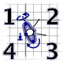
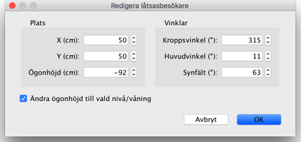
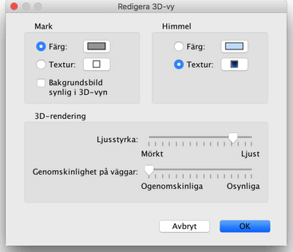

|
|
�ndra 3D-vy | ||
|
V�lj menyn 3D-vy > Vy ovanifr�n eller 3D-vy > L�tsasbes�kare f�r att v�xla mellan de tv� synvinklarna som visas i 3D-vyn.
N�r Vy ovanifr�n �r valt visar 3D-vyn ditt hem i tre dimensioner sett fr�n en
synvinkel ovanifr�n. I detta l�ge vrider du hemmet runt en vertikal axel genom att
h�lla ner v�nster musknapp och dra musen till v�nster eller h�ger, runt en horisontell
axel n�r du drar upp och ner. Du zoomar in och ut i 3D-vyn med mushjulet.
N�r L�tsasbes�kare �r valt visas en l�tsasbes�kare ovanifr�n i planl�sningen. Dess position och vinkel uppdateras samtidigt i planl�sningen och 3D-vyn varje g�ng den flyttas. L�tsasbes�karen omges av fyra mark�rer.
 |

|
|
N�r muspekaren �r �ver bes�karens axlar eller rygg, �ndras den f�r att visa att du kan
dra och sl�ppa den punkten f�r att �ndra vinkel p� bes�karens huvud, kropp eller
h�jden p� synvinkel. Medan du h�ller ned musknappen visas ett verktygstips som visar
det �ndrade v�rdet.
 Denna dialogruta l�ter dig ocks� �ndra l�tsasbes�karens synf�lt och st�lla in om den totala h�jden f�r betraktningspunkten ska �ndras beroende p� vilken niv�/v�ning som �r vald, vilket inneb�r att l�tsasbes�karen �ker upp eller ner till den valda niv�n/v�ningen. Slutligen, menyalternativet 3D-vy > Redigera 3D-vy... visar inst�llningsrutan f�r 3D-vyn, d�r du kan st�lla in f�rg och textur p� mark och himmel, ljusstyrka och genomskinlighet f�r v�ggar (och golv).  |
|